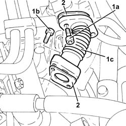
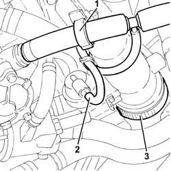
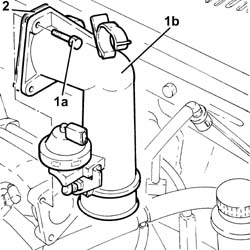
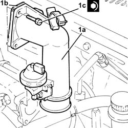

1060G50 Electro-pneumatically controlled THROTTLE CASING - R.R.
- Path
- Procedures > 10 ENGINE > 1060 DIESEL FUEL INJECTION > 1060G pressure pump electric control > 1060G50 Electro-pneumatically controlled THROTTLE CASING - R.R.
- Kind
- repair procedure (removal / refitting; the operation number is the code)
- Applies to
- all engines; all production periods
- Interactive page
- https://sloeber94.github.io/elrnDB-fDbl/en/#/2584497
Applies to: all engines; all production periods
 Removing
Removing
 Refitting
RefittingProceed with the removal 1044B10 fuel filter assembly - r + r or replace .
Proceed with the removal 5530B10 battery - r+r .
Proceed with the removal 5530B52 Battery DRIP TRAY/SUPPORT - R.R. .
1. Undo the bolts (1a) and (1b), then remove the engine oil return pipe from EGR solenoid to throttle body (1c).
2. Remove the gaskets.

Applies to: all engines; all production periods
1. Release the vacuum pipe from the retaining band.
2. Disconnect the vacuum pipe from the pneumatic valve on the electropneumatic throttle body.
3. Loosen the band fixing the air inlet hose to the electropneumatic throttle body.

Applies to: all engines; all production periods
1. Undo bolts (1a) and remove the pneumatic throttle body (1b).
2. Remove the gasket.

Applies to: all engines; all production periods
Refitting
Removing1. Replace the pneumatically-controlled throttle body (1a), complete with gasket (1b), back in its housing and secure by tightening bolts (1c) to the recommended torque.
 | Fastening | Component | Ø | Value (daNm) |
|---|---|---|---|---|
1c | - | - | - | - |

Applies to: all engines; all production periods
Tighten the band securing the air inlet hose to the electropneumatic throttle body.
Connect the vacuum pipe to the pneumatic valve on the electropneumatic throttle body.
Secure the vacuum pipe for the brake servo to the retaining band.
Refit the rigid pipe from EGR solenoid to throttle body in its housing complete with gasket and fix it with the bolts.
Proceed with the refitting 5530B52 Battery DRIP TRAY/SUPPORT - R.R. .
Proceed with the refitting 5530B10 battery - r+r .
Proceed with the refitting 1044B10 fuel filter assembly - r + r or replace .
Topics linked from this page (3)
- 1044B10 fuel filter assembly - r + r or replace
- 5530B10 battery - r+r
- 5530B52 Battery DRIP TRAY/SUPPORT - R.R.